Diseño para 3D
- Semestre 5 · Clase 10
- Texturas: un objeto gris, un material
Ya vimos
Color, Roughness, Metalness
y relieve (Normal y Bump)
Hoy sumamos los UVs y armamos un material completo
Les toca un objeto y un material.
Que parezca de ese material,
lo más realista que puedan
UVs
antes de pintar, hay que desplegar
Un UV es la malla
desplegada sobre la imagen
U horizontal · V vertical · de 0 a 1
Revisar
Pónganle un damero al objeto:
las casillas deben verse cuadradas y parejas
UV → Assign Checker Shader
Proyecciones
Planar: cosas planas
Cylindrical: vasos y botellas
Spherical: bolas · Automatic: lo complejo
UV → Create
Si se ve rayado
Los lados del objeto no miran al plano:
cambien de proyección
Islas y costuras
Cortar y coser
para repartir la malla
UV → Cut UV Edges · Sew UV Edges
Densidad
Islas pequeñas = textura borrosa
Todas deben tener la misma escala
UV Toolkit → Transform → Texel Density (Get y Set)
Salvavidas
Las texturas 3D no usan UVs
Wood · Marble · Granite · Leather · Rock · Snow · Cloud
Descanso
10 minutos · guarden antes de salir
Yo lo hago en mi objeto,
ustedes lo repiten en el suyo
abran hypershade.ma o su propio objeto
Paso 1
Las cuatro partes del Hypershade
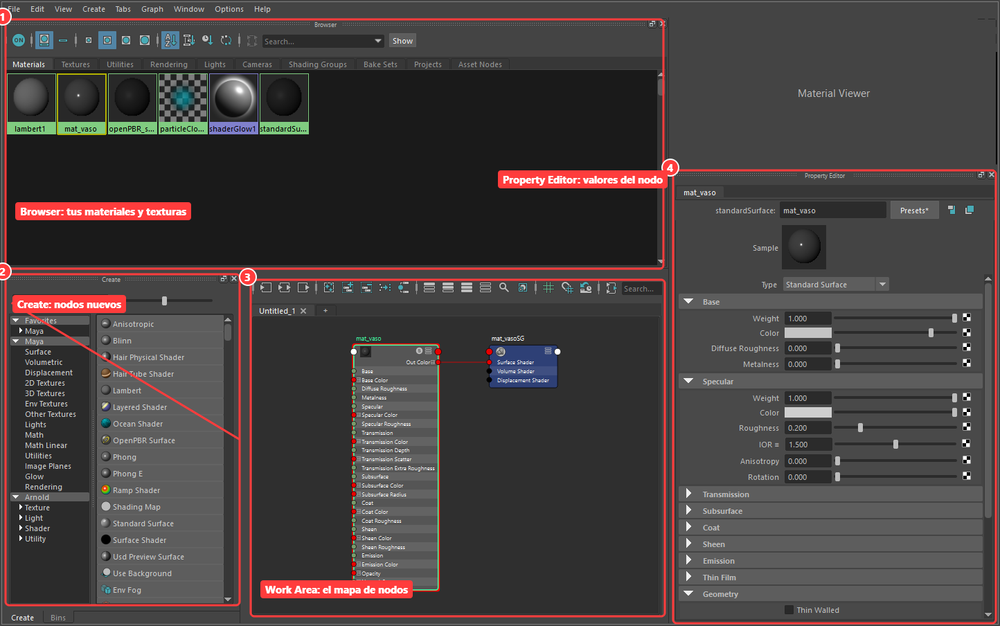
Windows → Rendering Editors → Hypershade
Paso 2
Crear el material
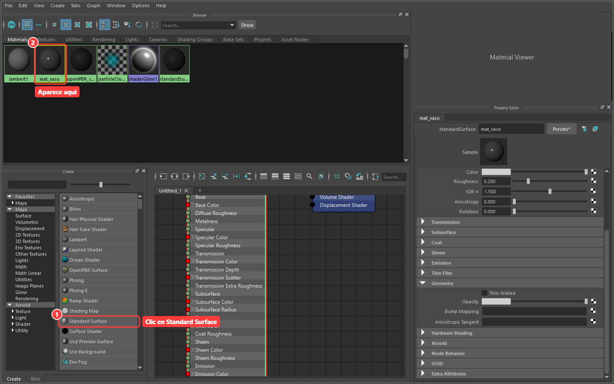
Create → Maya → Surface → Standard Surface
Paso 3
Asignarlo al objeto
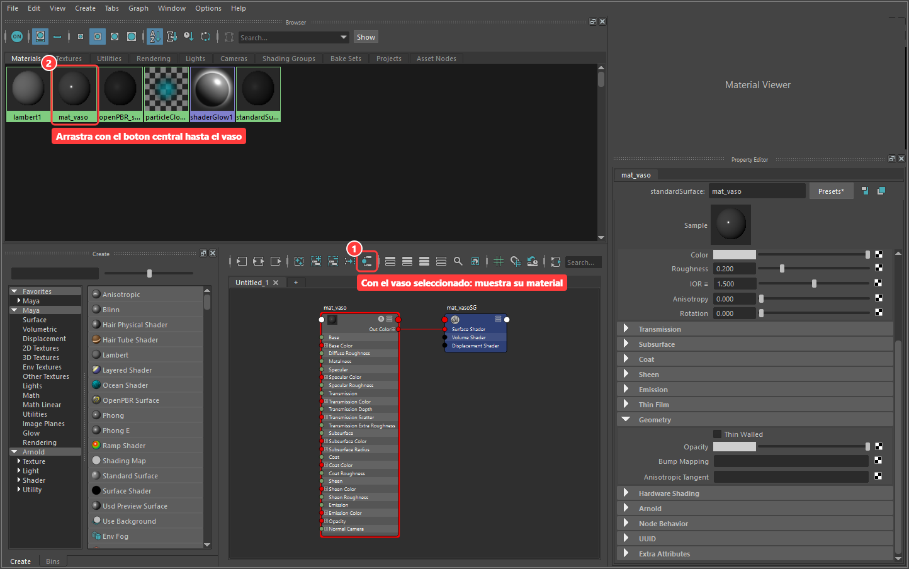
Botón central: arrastrar el material hasta el objeto
Paso 4
El damero conecta un mapa
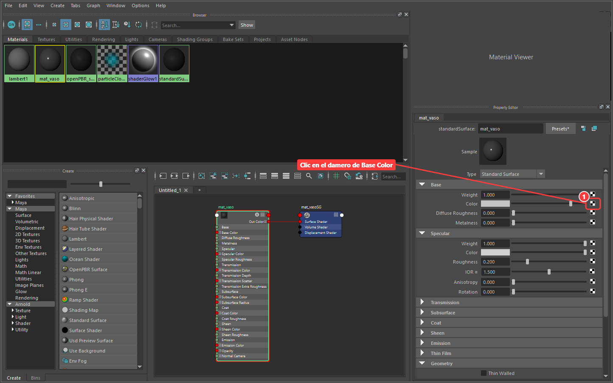
Base Color → clic en el damero
Paso 5
Elegir File
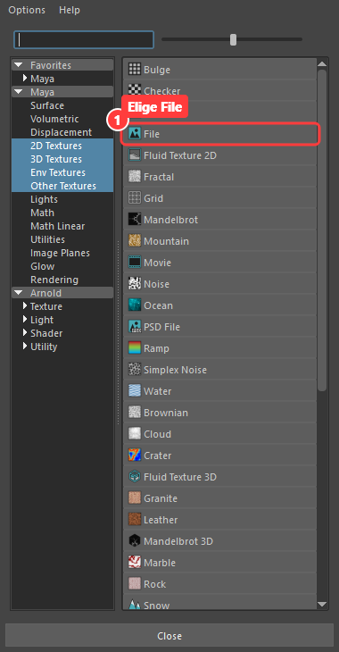
2D Textures → File
Paso 6
Buscar la imagen
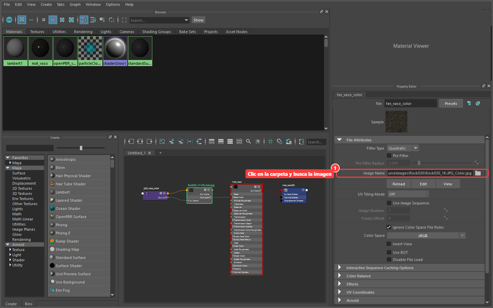
Image Name → carpeta → la imagen de color
Paso 7
Lo mismo con Roughness
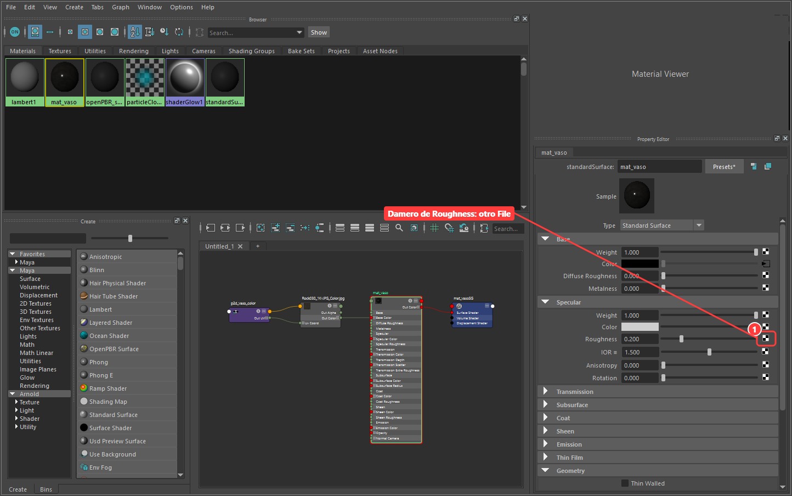
Specular → Roughness → damero → File
Paso 8
Los datos van en Raw
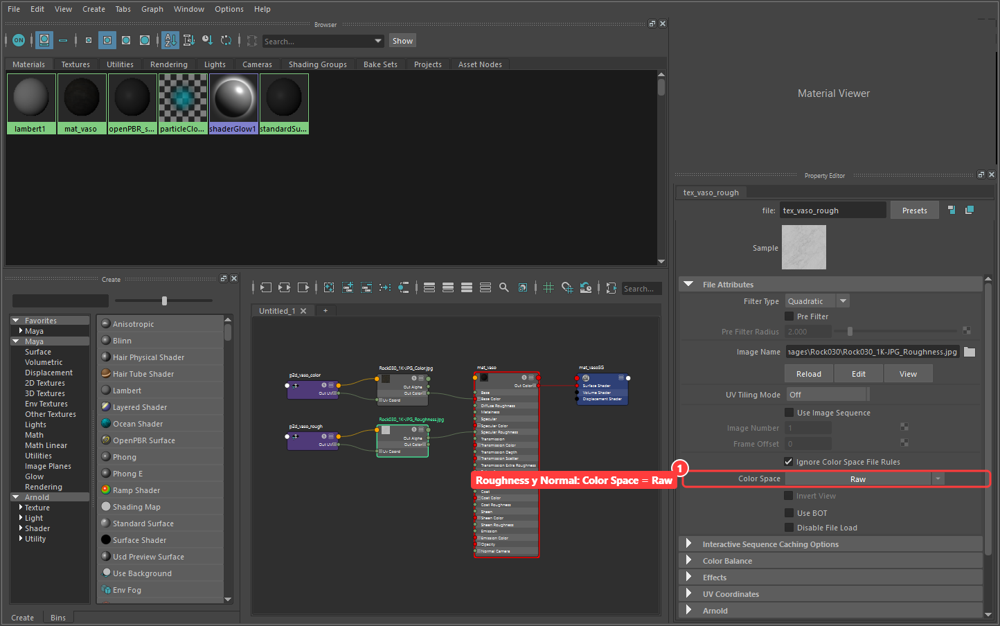
Roughness · Metalness · Normal → Color Space = Raw
Paso 9
El relieve entra por Geometry
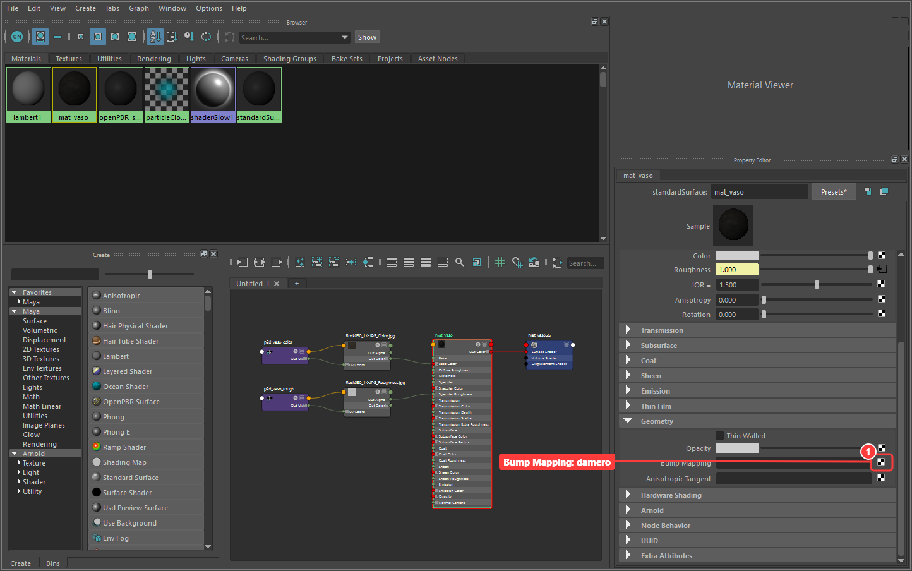
Geometry → Bump Mapping → damero → File (NormalGL)
Paso 10
bump2d: Tangent Space Normals
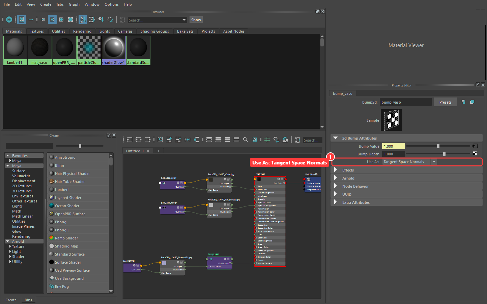
Use As → Tangent Space Normals
Paso 11
Ver todo el material como árbol
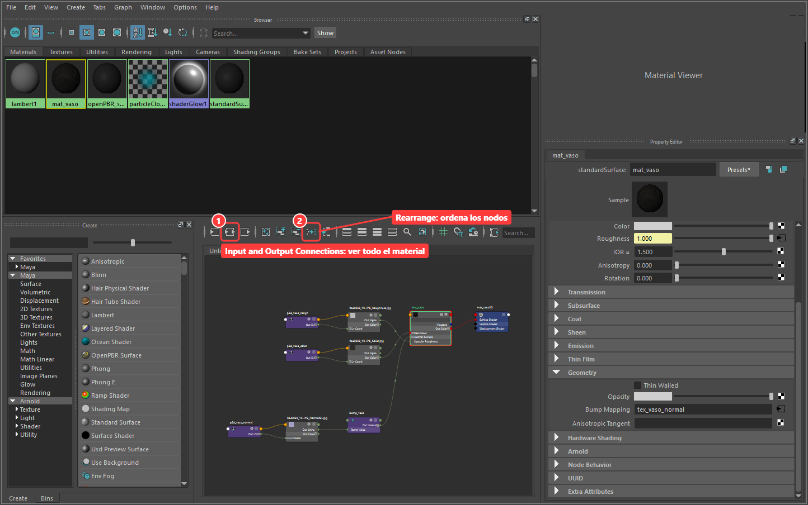
Input and Output Connections · Rearrange
Paso 12
Repeat UV: cuántas veces se repite
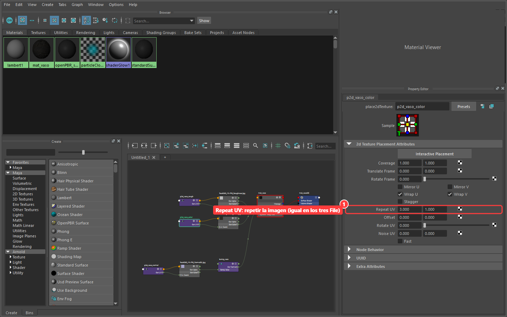
place2dTexture → Repeat UV (igual en todos los mapas)
Resultado
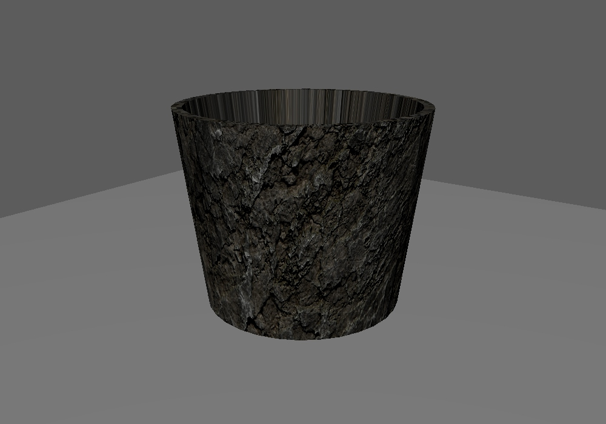
Color + Roughness + Normal · ¿ven el interior estirado?
¿Sin imágenes?
también se puede fabricar el material
Madera sin imágenes
Buscar Wood en Create Render Node
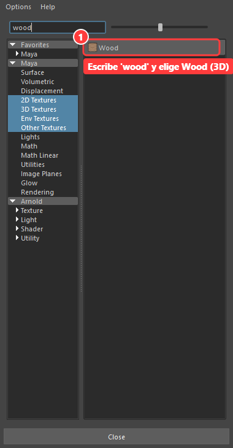
Escribir "wood" en el buscador
Madera sin imágenes
Dos colores definen la madera
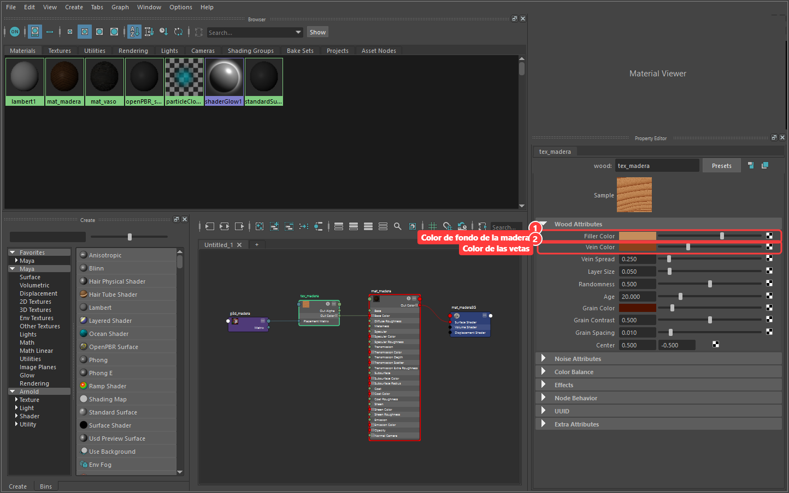
Filler Color · Vein Color · place3dTexture
Resultado
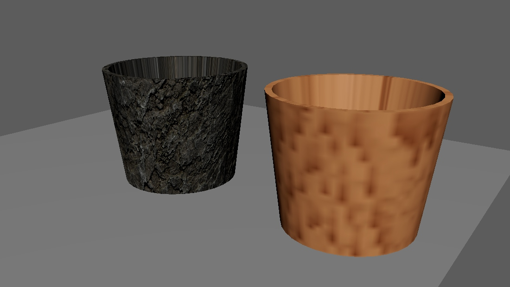
Con imágenes (izquierda) · sin imágenes (derecha)
Atajo
Un preset es un material
ya configurado
Gold · Copper · Chrome · Glass · Plastic · Rubber · Clay · Wax · Velvet · Ceramic · Honey · Skin...
Nodos útiles
file imagen · Noise / Fractal manchas
Ramp degradado · Cloth tejido
Contrast / Remap ajustar un mapa
Si les piden algo raro
¿Se puede fotografiar de cerca?
Sí: descárguenlo (ambientCG, Poly Haven)
No: fabríquenlo con nodos
Antes de tocar Maya, respondan sobre su material
- ¿De qué color es? ¿Varía?
- ¿Brilla o es mate?
- ¿Es metal?
- ¿Tiene relieve? ¿Fino o grande?
- ¿Hace algo raro con la luz?
Que parezca de su material,
lo más realista que puedan
100 minutos · paso por los puestos
Adivina el material
nadie dice qué le tocó
Entrega
Un pantallazo del viewport,
uno del Hypershade
y tres líneas de cómo lo lograron
Si me quieren agregar

Steam:
317510869

LoL:
Luxari#Lan
Correo institucional:
jjardila@libertadores.edu.co